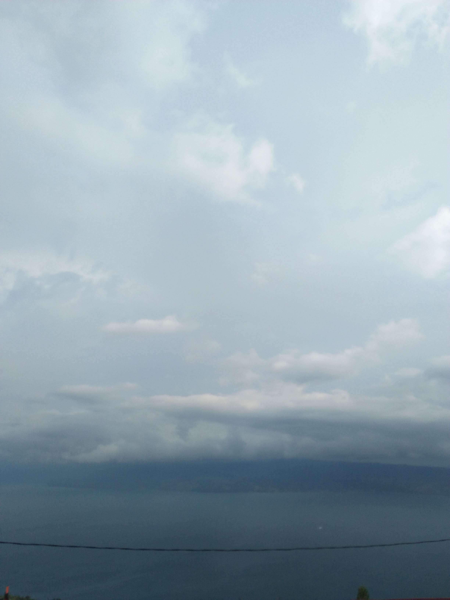

Oke, mari kita jujur-jujuran saja, letakkan semua rahasia dalam pikirmu—meski hanya dalam kepalaku. Sejujurnya, gelak tawamu adalah suara favorit yang paling ingin kudengar berulang-ulang. Tapi bagaimana denganmu? Apakah kau menyukai caraku tertawa? Ataukah tawaku terdengar seperti hantu perempuan di televisi yang membuatmu ngeri? Haruskah aku berlatih tertawa anggun layaknya perempuan yang ada di film klasik agar kau terkesan?
“Bagaimana jika telingamu ternyata tak pernah benar-benar merekam suaraku?”
Mari kita jujur lagi, sekali saja. Malam itu, aku menatapmu begitu dalam. Tentu kau takkan pernah tahu, sebab aku adalah pencuri yang ahli; aku mampu mengubah intonasi suaraku agar terdengar seperti tidak peduli, saat menatapmu tanpa meninggalkan jejak, tanpa sedikit pun menunjukkan bahwa duniaku sedang terpaku pada garis wajahmu.
Namun, sejujurnya hal yang paling menghantuiku adalah...
Malam itu, aku melihat mata dan senyummu bercahaya. Kau tampak sangat bahagia. Apakah benar begitu? Ataukah aku hanya sedang tertipu oleh harapanku sendiri? Mungkinkah kebahagiaan yang kulihat di wajahmu itu hanyalah pantulan dari caraku memandangmu?